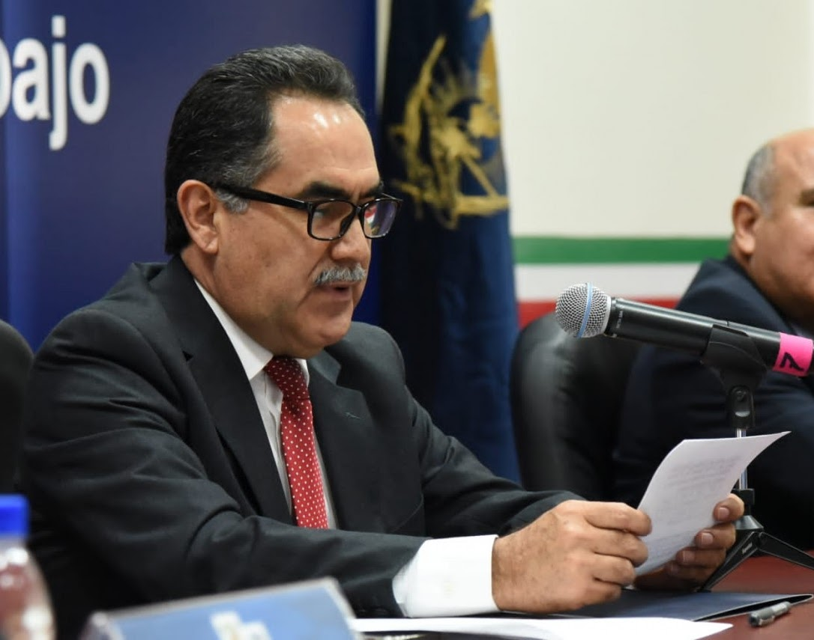
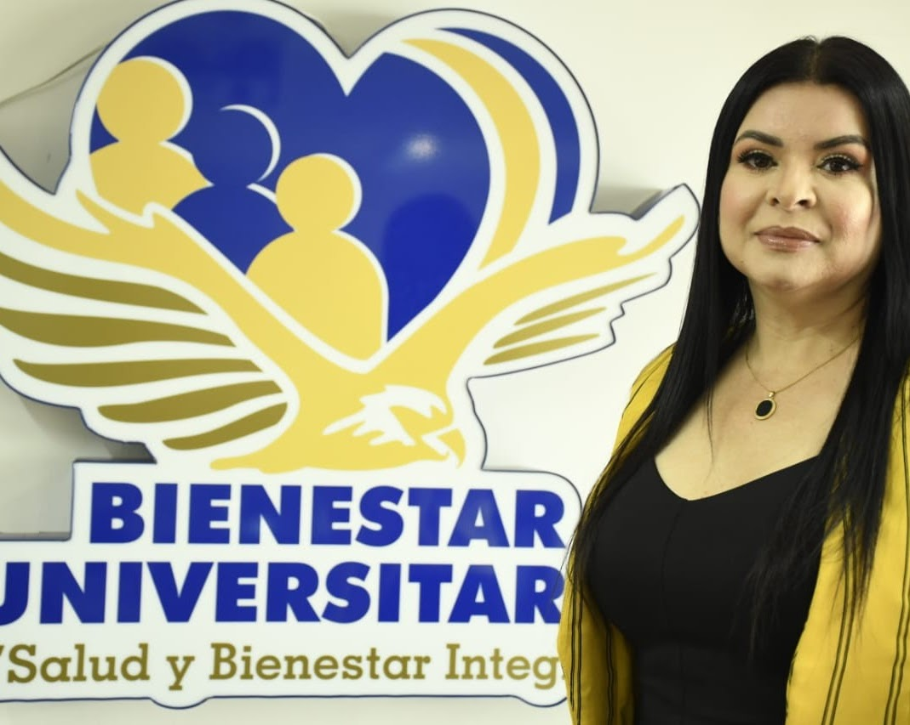

El programa ADIUAS se enmarca en el concepto de la educación inclusiva, y tiene como
propósito lograr que las y los estudiantes que presentan necesidades específicas de apoyo educativo
desarrollen competencias, potencialicen sus capacidades para participar social y laboralmente.

Presentación
La Universidad Autónoma de Sinaloa, en coordinación con Secretaría Académica
Universitaria y a través del Programa ADIUAS, responde a las necesidades
sociales con calidad educativa, y con ello estar a la vanguardia de las políticas
internacionales y nacionales en el tema de educación como una prioridad institucional.
Por tal motivo, hemos puesto atención especial en la formación integral y humanista con
equidad, inclusión y calidad educativa para todos los estudiantes sin distinción de raza,
nacionalidad, origen étnico, color de piel, peso, estatura, estado civil, edad, religión o
creencias, lengua, sexo, preferencia u orientación sexual e identidad de género, apariencia
física, estado civil, trabajo o profesión, embarazo, ideologías e inclinaciones políticas,
condición social, cultural, económica, de salud o de discapacidad y cualquier otra que
atente contra la dignidad humana, concentrando esfuerzos en formar a la comunidad
universitaria en la adquisición de valores, conocimientos, actitudes y habilidades para
vivir en armonía con uno mismo, con los demás y con el medio ambiente, sentando con esto las
bases para el desarrollo de una educación para la paz.
ADIUAS es la muestra fehaciente de la responsabilidad social de la
Universidad con los sectores más desprotegidos, el impacto principalmente en la atención a
estudiantes con discapacidad que bajo mi gestión se ha logrado ampliar la cobertura y la
diversificación de la oferta educativa para ellos(as), así como descentralizar la atención,
mejorando los servicios de intervención, y cuyos resultados de estas acciones han cambiado
la forma de percibir a esta población, dándoles el respeto que se merecen y la oportunidad
de crecimiento no solo en la Institución sino también en la sociedad.
Podemos decir que ADIUAS es más que un programa, es un compromiso con la
sociedad, con la inclusión de estudiantes antes discriminados, ya fuera por las barreras
para el aprendizaje, no valorados por sus talentos sobresalientes o por su identidad de
género, que de igual forma los margina y ocasiona deserción escolar o fuga de cerebros según
sea el caso. Por ello y para ellos seguiremos trabajando por la inclusión, equidad y calidad
educativa mejorando cada día las acciones, con la convicción de lograr una sociedad más
justa y en igualdad de oportunidades para todos.
Rector de la Universidad Autónoma de Sinaloa
Misión
ADIUAS tiene como Misión eliminar las barreras para el aprendizaje y apoyar la formación
integral e inclusiva para lo cual, brinda seguimiento especializado en condiciones
de equidad e igualdad de oportunidades a estudiantes de educación media superior, superior y
posgrado de la Universidad Autónoma de Sinaloa, que presentan necesidades específicas de
atención, poseen talentos sobresalientes o pertenecen a grupos en desventaja o vulnerables, para
los que se requiere desplegar acciones que favorezcan el desarrollo máximo de sus capacidades y
así disminuir las desigualdades físicas, sensoriales, comunicativas, socio-culturales,
económicas, de género y de cualquier otra que atente contra la dignidad humana y/o que
dificulten el acceso a los programas educativos, logrando su plena inclusión a la vida
Universitaria.

Visión
En el 2021, ADIUAS se ha consolidado como programa y brinda atención de calidad tanto
a estudiantes con barreras para el aprendizaje, como aquellos que poseen talentos
sobresalientes y/o pertenecen a grupos en desventaja o en situación de
vulnerabilidad. Las Unidades Regionales cuentan con Centros de Apoyo ADIUAS con
equipamiento específico y desde donde se generan los materiales educativos adaptados, las
estrategias metodológicas, se diseñan los cursos de formación a la comunidad universitaria,
se realizan las valoraciones y donde se ofrecen los apoyos compensatorios extraescolares.
El equipo de tutores de apoyo especializado (TAE) está capacitado en lenguajes,
tiflotecnología, adecuaciones curriculares y estrategias alternativas para facilitar el
desarrollo óptimo de las potencialidades de las y los estudiantes durante su formación
profesional. La Secretaría Académica Universitaria coordina esta atención especializada
vinculando al Programa Institucional de Tutoría y los Centros de Atención Estudiantil (CAE)
con los Centros de Apoyo ADIUAS y la Red de TAEs, que mediante el trabajo colegiado
coadyuvan en la inclusión educativa y social de estas poblaciones en cada unidad académica
de la Institución.
Objetivos
Contribuir a la inclusión educativa y el éxito escolar de estudiantes con barreras para el
aprendizaje, con talentos sobresalientes y/o en condiciones de desventaja o de
vulnerabilidad.
Desarrollar en la población antes mencionada, las competencias genéricas y disciplinares
necesarias para el logro de la autonomía personal y de participación plena en la escuela y
en sociedad, vinculadas a la dinámica productiva y la actual sociedad del conocimiento.
Brindar apoyo, acompañamiento, recursos materiales y de atención al entorno que aseguren la
accesibilidad y el logro de la autonomía personal.
Ofrecer atención personalizada e integral con
adecuaciones y soporte que aseguren la
eliminación de barreras físicas, comunicativas, socio-culturales y económicas o de
cualquier otra índole que afecte su inclusión al sistema educativo, mediante un cuerpo
de Tutores de Atención Especializados (TAE).
En coordinación con la Unidad de Bienestar
Universitario, promover en la comunidad
universitaria una cultura de respeto a las diferencias y de atención educativa
equitativa para la diversidad de estudiantes.
Concretizar las políticas de equidad y
respeto a la diversidad para el ingreso,
permanencia y terminación exitosa en los estudios de bachillerato, licenciatura y de
posgrado.
Impulsar el trabajo corresponsable en equipo,
que involucre a los diversos actores
educativos (estudiantes, profesores, padres de familia y administradores) para favorecer
la inclusión educativa.
Coordinar y desarrollar acciones de
capacitación y sensibilización para la atención a la
diversidad, la equidad y la inclusión educativa en el nivel medio superior, superior y
posgrado.
Evaluar y dar seguimiento a los procesos y
resultados de las acciones emprendidas para
incluir estudiantes con barreras para el aprendizaje y con talentos sobresalientes o en
situación de vulnerabilidad en la Universidad.
Proveer de materiales educativos adaptados y
tiflotecnología de vanguardia a las
Unidades académicas que tengan incluidos en sus aulas estudiantes con discapacidad.
Difundir el uso de la lengua de señas
mexicana e interpretar clases y eventos.
Estar a la vanguardia de las necesidades
educativas para los grupos vulnerables,
desarrollando acciones para atenderlas, respondiendo siempre con responsabilidad social.